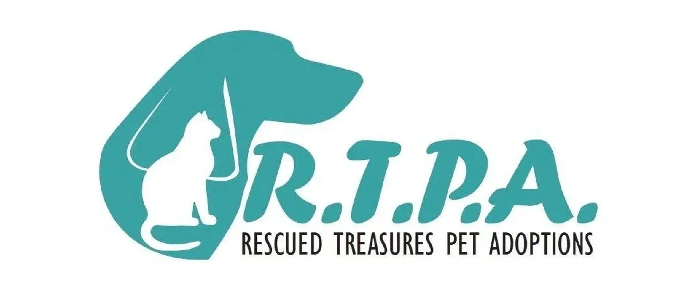

Home
Pre-Adoption Email Template & Attachments
Email Attachments
Download all three documents to attach to your pre-adoption email.
Food Transition Guide (Word)
FIP: What Every Cat Owner Should Know (PDF)
Introducing a New Cat (Word)